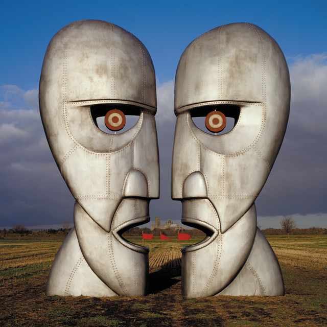

Pink Floyd es una de las bandas más influyentes en la historia del rock, destacándose por su innovación sonora, sus letras profundas y sus espectáculos visuales inmersivos. Fundada en Londres en 1965 por Syd Barrett, Roger Waters, Richard Wright y Nick Mason, la banda rápidamente se convirtió en un referente del rock psicodélico, para luego evolucionar hacia un sonido progresivo que marcaría generaciones.
El álbum The Dark Side of the Moon (1973) consolidó a Pink Floyd como una de las bandas más importantes del mundo. Su combinación de sintetizadores, efectos de sonido experimentales y letras introspectivas lo convirtió en un clásico atemporal. Luego, Wish You Were Here (1975) y Animals (1977) reinforced la identidad conceptual de la banda, mientras que The Wall (1979) llevó su visión artística a otro nivel con una ópera rock de gran carga emocional y crítica social.
Su influencia sigue vigente en la actualidad, con millones de seguidores y un impacto que trasciende generaciones. La música de Pink Floyd no solo redefinió el rock, sino que dejó una huella imborrable en la cultura popular.

Miembros de la banda
Pink Floyd estuvo conformado por varios músicos a lo largo de su historia, con una alineación clásica que dejó una huella imborrable en la música. La banda fue fundada en 1965 por Syd Barrett (guitarra y voz), Roger Waters (bajo y voz), Richard Wright (teclados y voz) y Nick Mason (batería).
Tras la salida de Barrett en 1968 debido a problemas de salud mental, David Gilmour se unió como guitarrista y vocalista, convirtiéndose en una de las figuras clave del grupo. Con esta formación, Pink Floyd alcanzó su mayor éxito, siendo responsables de álbumes icónicos como The Dark Side of the Moon y The Wall. A lo largo de los años, la banda experimentó cambios, con la salida de Wright en los años 80 y la marcha de Waters en 1985, pero su legado sigue vivo como una de las agrupaciones más influyentes del rock.